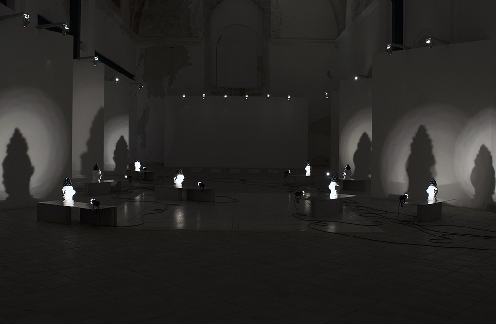
Relaying an experience of the unknown and of a new place or space, may provide an allegorical understanding. The European tourers collected albums of engraves as a reflection of the yearn for knowledge and taste for the classical culture during a Grand Tour. These ‘adventurers’ resorted to etched prints as representation of the 'cultural heritage' they observed and as a support for documentation, returning ‘home’ with wandering images. Like the curious tourers from the romantic movement, Pedro Tudela, collected four different objects from Etna, Syracuse and its nearest sea coast.These objects – an iron bar, volcanic stone and a pair of ropes – became the motto for the artworks Tudela developed within the context of a curatorial and artistic residency in the Spring of 2019. The artworks reveal different civilizations and the cultural appropriations of Syracuse, through different layers that became part of this project: from elements of Nature to traditional ceramic crafts, and ordinary objects collected at boat piers and a light house surrounded by a lunar-like surface. On a set of traditional Sicilian ceramics – Testa di Moro – the objects collected by Tudela are manipulated. The collection of these objects is revealed through a map, and other artworks arise from iron bar, volcanic stone and the pair of ropes.
The exhibition space, a former Baroque chapel designed by Pompeo Picherali in the XVIII century in a convent in Syracuse, is filled with sound, resulting from field recordings made in an artificial cave named Orecchio di Dionisio by Caravaggio when he visited it in the first decade of the XVII century. On a set of traditional Sicilian ceramics – Testa di Moro – the objects collected by Tudela are manipulated, resulting on the subversion of a pop culture, mainstream, souvenir object. These handcrafted couples of moorish ‘testa’ are placed on a mirror that reflects a tempera fresco of the dome of this catholic convent. As if by the merging of different cultural layers, a pictorial sculpture reveals a XXI century insight on Sicily.
The collection of these objects is showcased through a diagram, engraved like Piranesi did for is copper plates, over four steel plates that plots the places visited during the artistic residency, revealing the geolocation of this tour. Other artworks arise from the iron bar, volcanic stone and the pair of ropes, represented on a set of mirrors that merge into the chapel, hovering through light on its space, adding a pulley, as an unforeseen object that balances this Sicilian overviews.
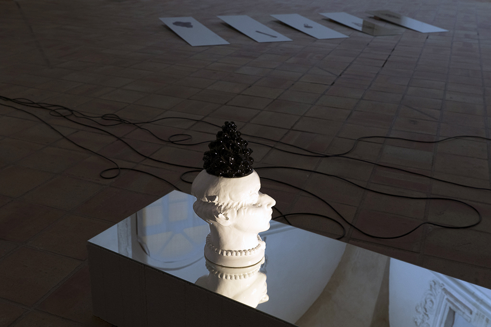
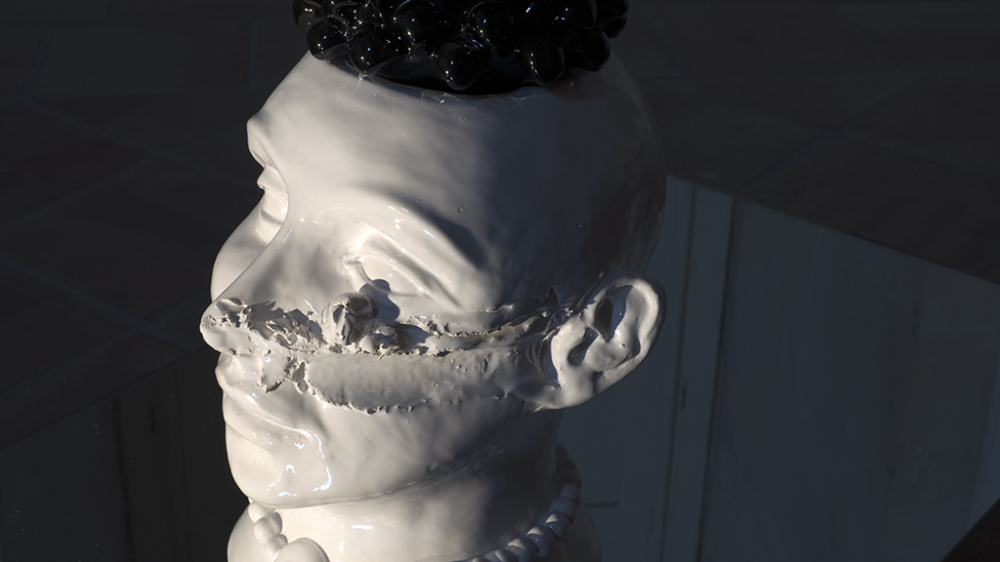
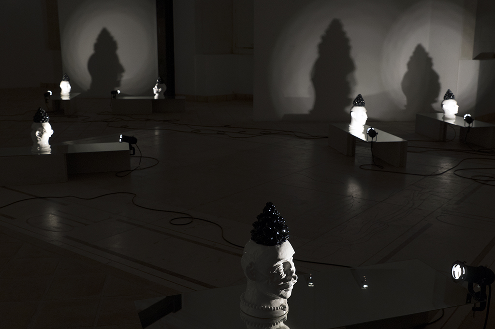
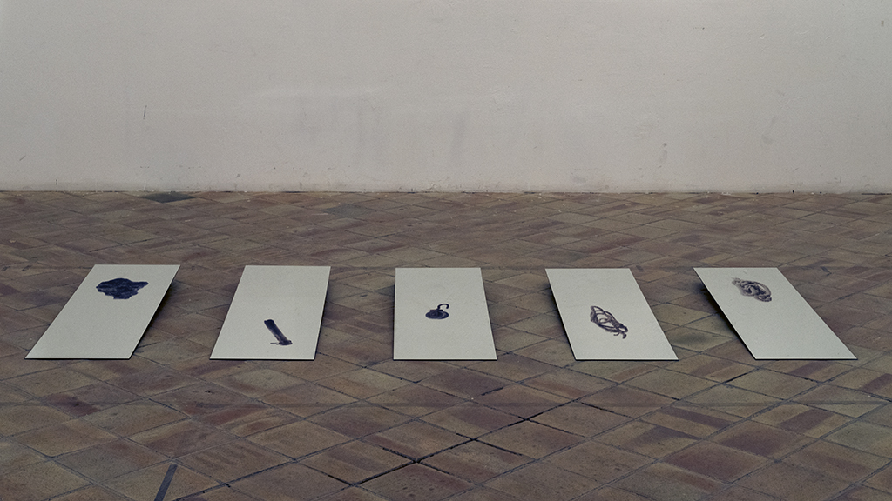
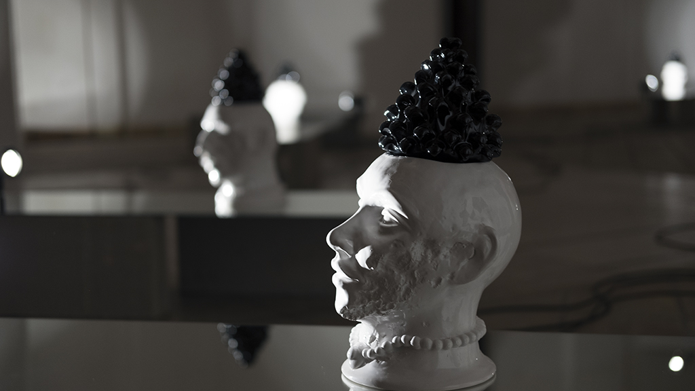
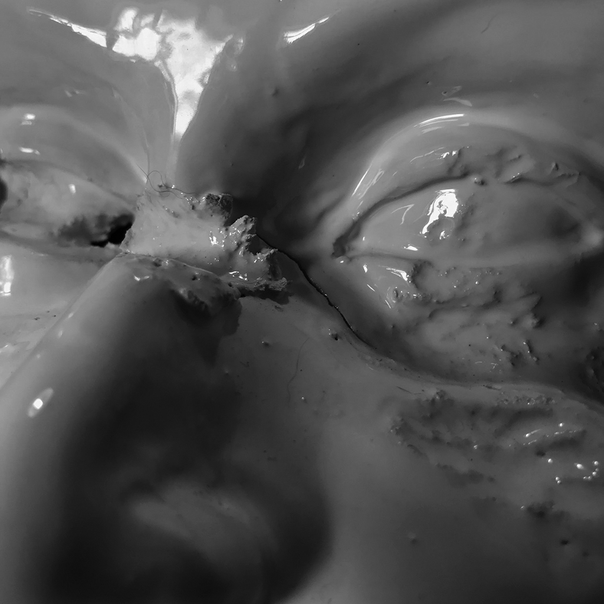
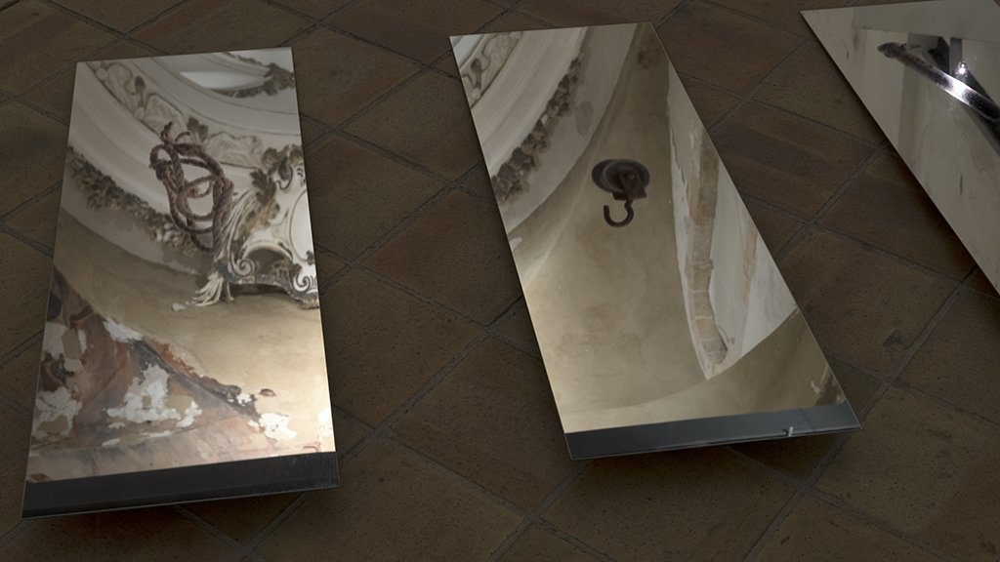
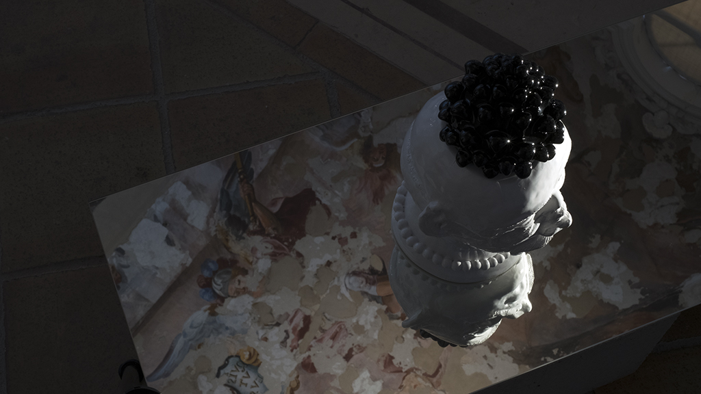
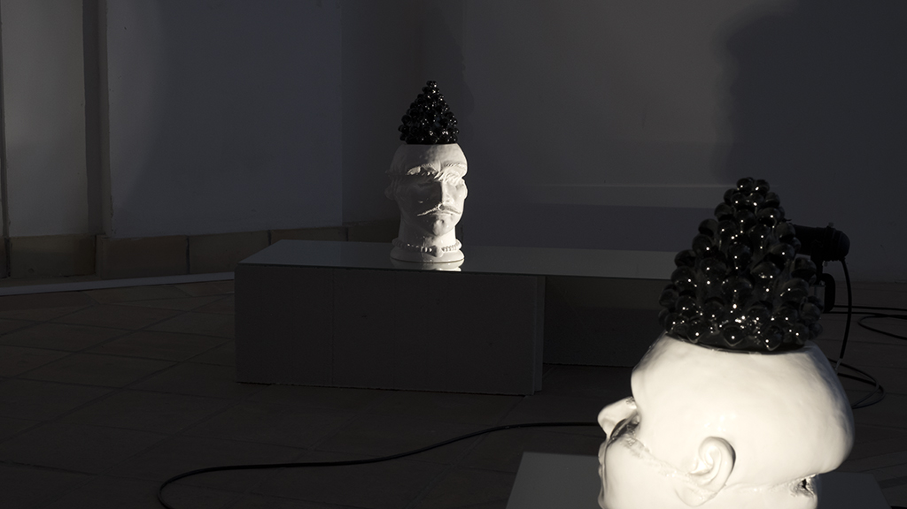
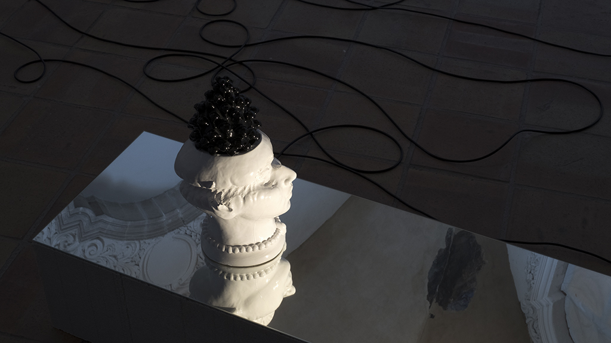
Ex Convento Del Ritiro / Via Vincenzo Mirabella, 31 – Siracusa, Itália
6 – 14.12.2019
Heart of Glass – Associação Cultural
Luís Pinto Nunes,
Luís Albuquerque Pinho
Città di Siracusa, MADE Program – Accademia di Belle Arti Rosario Gagliardi, KUBIKGALLERY, Fundação Calouste Gulbenkian, República Portuguesa – Cultura / Direção-Geral das Artes, Câmara Municipal do Porto
Luís Pinto Nunes,
Luís Albuquerque Pinho,
Mafalda Rangel
Luís Pinto Nunes,
Luís Albuquerque Pinho,
Pedro Tudela
Luís Cepa
Cláudia Terranova,
Gaetano Salemi,
Jona di Paola,
Sílvia Cassataro
Carlos Lima,
João Lima
Pedro Tudela
Pedro Tudela
Alessandro Montel,
Francesco Moncada,
João Azinheiro,
Mario Verdicchio,
Sam Baron,
Rosi Avelar,
Valentina Rapelli